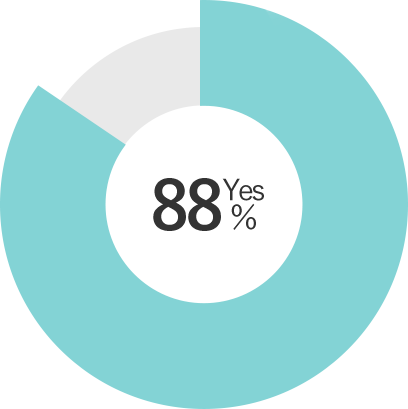
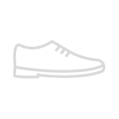
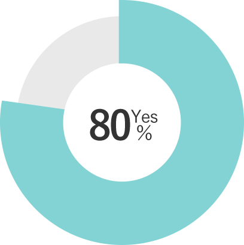

そんなあなたのためにFreeksFoodは誕生しました
農薬が使われているのか心配・・・
子供には新鮮な野菜を食べさせてやりたい・・・
新鮮で質の良い野菜を食べたい・・・
旬の野菜を考えることが大変・・・
FreeksFoodなら、そのこだわりを全て叶えます
ABOUT
新鮮な野菜をその場で梱包し即日配送！
FreeksFoodは農家の方と専属で契約しており、誰が作っているか確認することができ安心です。
また、朝に採れたての野菜を即梱包し、発送するので鮮度は抜群！
無農薬栽培なので安心して食べられる！
広大な土地で無農薬栽培しています。
無農薬なので虫食いもあるかもしれませんが、生産者がしっかりと分別しながら梱包しています。
そのためお子様でも安心して食べることができます。
FreeksFoodが選ばれる4つの理由
01 高い安全性
生産者と共に適切にFreeksFood側の社員が管理状態を
チェックしています。
そして、その結果をホームページで確認することができ
ます。
結果の確認などでき安心できるか？
02 種類の
豊富な野菜を食べる

全国に多くの農家様と契約しているので、色々な野菜を
選ぶことができます。
食べたい野菜を見つけることができた？
03 即日配送で新鮮
朝に採れた野菜を即日発送するので、頼んでからすぐの
新鮮な野菜を食べることができます。
野菜は新鮮でしたか？

04 野菜の美味しい
食べ方も知れる
いざ野菜をもらっても、どう食べれば良いかわからずサ
ラダのみになりやすいところです。
しかしFreeksFoodでは美味しい野菜の食べ方を紹介す
るメニューも知れることができます。
献立を考える苦労が減った？

CUSTOMER REVIEWS
お 客 様 の 声
”安心して子供にも食べさせられます！”
まだ子供が小さいので、どのくらい農薬が使われているのか心配していました。
ホームページではしっかりと管理されていることが確認できるので
安心して親子共々食べています。
気づいたらなくなっているので、定期購入しました！
31歳（女性）
”栄養を満遍なく摂ることができます”
仕事柄、帰りが遅くカップ麺などを食べることが多いので栄養を心配していました。
でも、FreeksFoodを使って定期的に野菜を購入することで
栄養を補えるようになりました。
今はサラダだけなので、次は料理に挑戦していきたいと思っています。
36歳（男性）
"新鮮な野菜を届けてくれるので楽ちん"
年を重ねるにつれて外へ買い物に行くのも大変で、
重いものも持てなくなってきていました。
でも、新鮮な野菜を届けてもらえるので、とても助かっています。
毎日美味しい野菜を食べられて健康に過ごせそうです。
52歳（女性）
"料理が上手くなった”
元々料理をしないので野菜について全くわからなかったですが、
元々野菜や料理について知ることができるので、勉強になっています。
家族に料理を作ってあげると、驚かれましたがとてもおいしく作ることができました。
28歳（女性）
PRODUCTS
商 品 紹 介
採れたてトマト
価格 1,500円/1kg（税別）
<旬の採れたてトマト>
トマトは、リコピンのほかβ-カロテン、ビタミンCなどの栄養素を豊富に含みます。
ちょうど今頃が旬になるので甘味も強く食べやすくなっています。
田中さんのナス
希望小売価格 600円/500g（税別）
<ナス>
なすはビタミンやミネラルなどの栄養素では目立つものがありませんが、カリウムが含まれています。 カリウムが不足すると脱力感、食欲不振、疲れ、内臓機能低下などの症状を引き起こす場合がありますので、 特に夏場の疲労回復のメニューに取り入れたい野菜です。また、なすには体を冷やす作用もあるので夏場の食事に積極的に取り入れましょう。
FREQUENTLYASKEDUESTIONS
よ く あ る 質 問
ホームページでは生産者、無農薬で正しく生産されているかを確認することができます。
場所によりますが、関東・関西・東北は１日、北海道・沖縄・四国は２日かかることがあります。
ただ、野菜は朝に採れたものを送るので新鮮なまま食べることができます。
発送後の返品・返送は承っておりません。傷物が入っているかもしれませんが、それは無農薬で栽培するためご理解をお願いいたします。
発送した野菜には、生産者の方の情報をお伝えいたします。そのため、直接メッセージを送っていただくか、お問合せフォーム
のから
「生産者の方へ」を選んでもらいメッセージを送っていただければ、代わりにお伝えいたします。